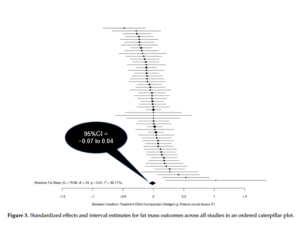
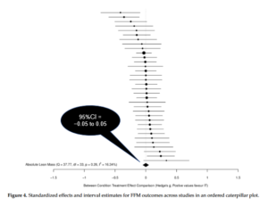

Cardio
November 21, 2021
A common controversy in the fitness field is whether to use high-intensity interval training (HIIT) or moderate-intensity continuous training (MICT) for optimizing fat loss. The debate rages on, with proponents on both sides of argument supporting their positions with logical rationale.
To help bring clarity to the topic, our group recently carried out a meta-analysis of existing literature. This paper came to fruition after a previous meta-analysis showed superior body comp benefits for HIIT, going as far as alluding to HIIT as a “magic bullet” for fat loss. The paper received a huge amount of media attention, with some of the most prominent magazines and news outlets touting the findings in feature articles. However, a subsequent letter to the editor noted that the paper had multiple issues in reporting and analysis. Sadly, the inconsistencies were never addressed by the authors, ultimately leading to the paper’s retraction.
Given the aforementioned issues with the previous meta-analysis, I decided to make this topic the focus of an independent study course that I teach in our master’s degree program, teaming with my students to remedy the literature by carrying out an updated meta. We comprehensively searched multiple databases for research directly comparing HIIT and MICT on measures of body composition and found 56 studies that met our inclusion criteria. I invited my colleagues James Steele (a co-author on the previous meta who wrote a detailed Twitter post about the experience) and Jozo Grgic to collaborate on the analysis and interpretation of data. The paper, titled Slow and Steady, or Hard and Fast? A Systematic Review and Meta-Analysis of Studies Comparing Body Composition Changes between Interval Training and Moderate Intensity Continuous Training, is open-access, free for all to read.
In short, our results refute those of the previous meta, providing compelling evidence that HIIT and MICT produce very similar decreases in fat loss and increases in fat-free mass over time. In technical terms, the point estimates for all measures hovered around zero with very narrow confidence intervals (see the accompanying figures below). In layman’s terms, there were virtually no differences in body composition between methods under the conditions studied. None. Intriguingly, there were similar rates of adherence (high) and adverse events (low) between methods as well.


Take-home: We can confidently state that HIIT cannot be considered a “magic bullet” for fat loss; MICT is equally as effective for achieving this outcome.
It’s important to note that the absolute amount of fat loss from cardio in the studies analyzed was quite small, amounting to an average of less than a pound over 12 weeks. Tightly controlled research shows that cardio can produce meaningful reductions in body fat, but it requires a large time commitment to achieve these results (in this case, ~11 hours per week)—a commitment beyond what most people are willing and able to dedicate. This finding reinforces the fact that diet is the most effective way to lose fat. That said, emerging evidence indicates that cardio is a beneficial supplement to fat loss regimens, particularly for sustaining long-term weight maintenance (ideally combined with resistance training, which is arguably of even greater value in this regard).
There are several important caveats to findings: First, the vast majority of studies instructed subjects to follow their usual diet as opposed to providing a structured nutritional regimen. Thus, it’s not clear if and how combining HIIT or MICT with a diet-induced energy deficit may affect results. Second, the studies did not take into account the effects of combining cardio with resistance training (a.k.a. concurrent training). It’s possible there may be a differential interaction (i.e. one condition has a more pronounced interaction than the other) when the two modalities are combined, either from an acute interference effect or perhaps chronically from overtraining. Third, there is a paucity of research on those with low body fat levels (e.g. bodybuilders, athletes, etc.); it remains to be determined if different cardio methods may impact the ability to further reduce body fat (i.e. into single-digit percentages) in these individuals. Finally, the meta-analysis is specific to the effects of cardio on body composition. There is evidence that HIIT training may confer additional health-related benefits over and above that seen with MICT, at least in certain outcomes.
The bottom line is that, from a body comp standpoint, you should choose an aerobic method based on preference. Results with HIIT are accomplished in less than half the time as MICT, but HIIT requires a higher level of exertion that heightens temporary discomfort. For situations specific to the study limitations (i.e. cardio performed in combination with restrictive diets, resistance training, and/or those with low body fat levels), experimentation is warranted to tailor prescription to your individual results. Finally, note that the choice does not necessarily have to be binary; you can opt to perform some HIIT sessions and some MICT sessions. Research can help to guide exercise prescription, but ultimately you must determine the best course of action based on individual needs, abilities, and goals.
No comments yet.
Sorry, the comment form is closed at this time.


 Entries (RSS)
Entries (RSS)


{kind=link}
{kind=link}